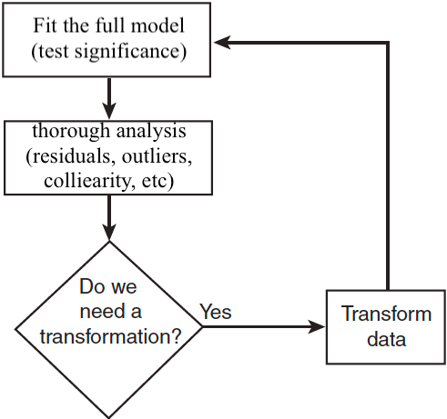
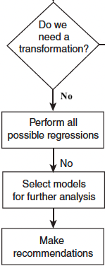
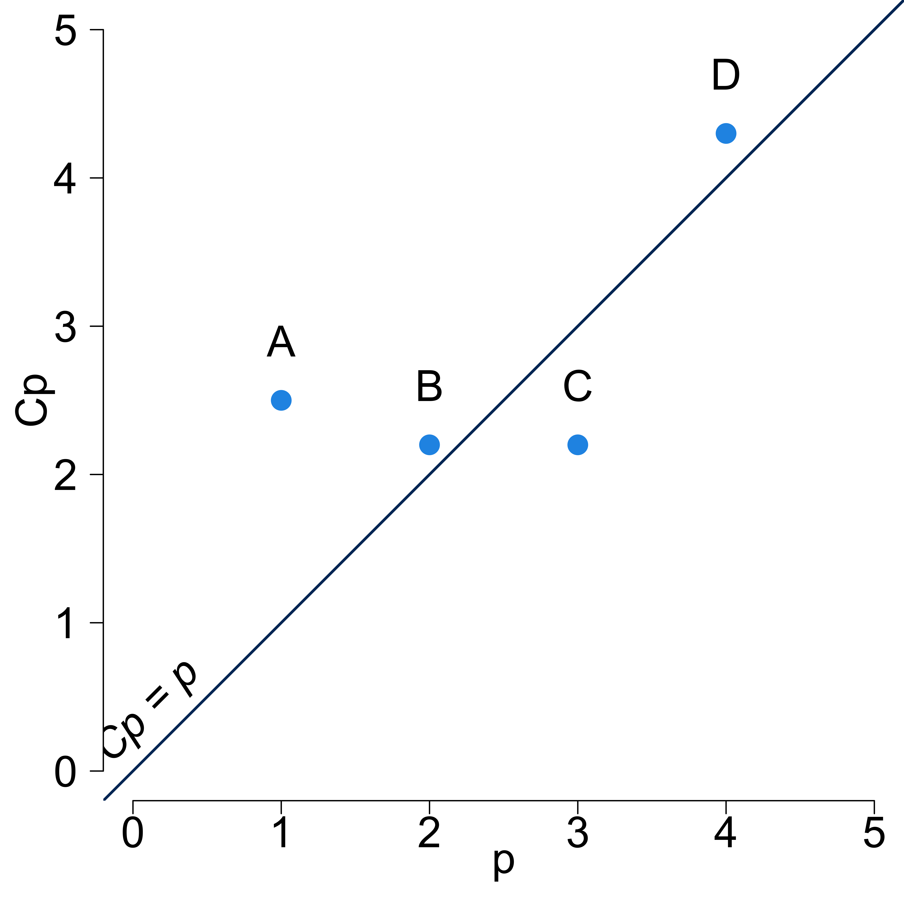
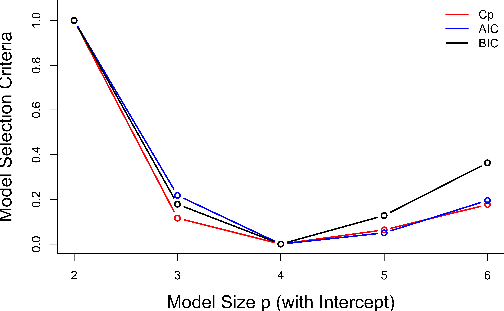

Model Building, Selection and Validation
MATH 4780 / MSSC 5780 Regression Analysis
Dr. Cheng-Han Yu
Department of Mathematical and Statistical Sciences
Marquette University
Department of Mathematical and Statistical Sciences
Marquette University
Model Building, Selection and Validation
Model Building Process
Model Selection Criteria
Selection Methods
Model Building
So far, we assume that we
- have a very good idea of the basic form of the model (linear form after transformation)
- know (nearly) all of the regressors that are important and should be used.
Model Adequacy
Model Selection

Variable Selection
- We have a large pool of candidate regressors, of which only a few are likely to be important.
- Finding an appropriate subset of regressors for the model is called model/variable selection.
Two “conflicting” goals in model building:
as many regressors as possible for better predictive performance on new data (smaller bias).
-
as few regressors as possible because as the number of regressors increases,
- \(\mathrm{Var}(\hat{y})\) will increase (larger variance)
- cost more in data collecting and maintaining
- more model complexity
A compromise between the two hopefully leads to the “best” regression equation.
What does best mean?
There is no unique definition of “best”, and different methods specify different subsets of the candidate regressors as best.
Predictive Performance
- A selected model that fits the observed sample data well may not predict well on new observations.
- Build a good regression function/model in terms of prediction accuracy. (Model validation/assessment)
- Want: The selected model minimizes the mean square prediction error (MSPE) on the new data: \[\small MSPE(\hat{y}) = E\left[ (\hat{y} - y)^2\right] = E\left[ (\hat{y} - E(\hat{y}))^2\right] + [E(\hat{y}) - y]^2 = \mathrm{Var}(\hat{y}) + \text{Bias}^2(\hat{y})\]
- The mechanics of prediction is easy:
- Plug in values of predictors to the model equation.
- Calculate the predicted value of the response \(\hat{y}\)
- Getting it right is hard! No guarantee that
- the model estimates are close to the truth
- your model performs as well with new data as it did with your sample data
Spending Our Data
- Several steps to create a useful model:
- Parameter estimation
- Model building and selection
- Performance assessment, etc.
- Doing all of this on the entire data may lead to overfitting:
The model performs well on the current sample data, but awfully predicts the response on the new data we are interested.
Overfitting
The model performs well on the current sample data, but awfully predicts the response on the new data we are interested.
- Low error rate on observed data, but high prediction error rate on future unobserved data!
Source: https://i.pinimg.com/originals/72/e2/22/72e222c1542539754df1d914cb671bd7.png
Splitting Data
Often, we don’t have another unused data to assess the performance of our model.
Solution: Pretend we have new data by splitting our data into training set and test set (validation set)!
-
Training set:
- Sandbox for model building/selection
- Spend most of your time using the training set to develop the model
- Majority of the original sample data (usually ~ 80%)
-
Test set:
- Held in reserve to determine efficacy of one or two chosen models
- Critical to look at it once only, otherwise it becomes part of the modeling process
- Remainder of the data (usually ~ 20%)
Model Selection Criteria
The full (largest) model has \(M\) candidate regressors.
There are \(M \choose p-1\) possible subset models of size \(p\).
There are totally \(2^M\) possible subset models.
An evaluation metric should consider Goodness of Fit and Model Complexity:
Goodness of Fit: The more regressors, the better
Complexity Penalty: The less regressors, the better
- Evaluate subset models:
- \(R_{adj}^2\) \(\uparrow\)
- Mallow’s \(C_p\) \(\downarrow\)
- Information Criterion (AIC, BIC) \(\downarrow\)
- PREdiction Sum of Squares (PRESS) \(\downarrow\) (Allen, D.M. (1974))
Selection Criteria: Mallow’s \(C_p\) Statistic \(\downarrow\)
For a model with \(p\) coefficients ( \(k\) predictors ),
\[\begin{align} C_p &= \frac{SS_{res}(p)}{\hat{\sigma}^2} - n + 2p \\ &= p + \frac{(s^2 - \hat{\sigma}^2)(n-p)}{\hat{\sigma}^2} \end{align}\]
\(\hat{\sigma}^2\) is the variance estimate from the full model, i.e., \(\hat{\sigma}^2 = MS_{res}(M)\).
\(s^2\) is the variance estimate from the model with \(p\) coefficients, i.e., \(s^2 = MS_{res}(p)\).
Favors the candidate model with the smallest \(C_p\).
-
For unbiased models that \(E[\hat{y}_i] = E[y_i]\), \(C_p = p\).
- All of the errors in \(\hat{y}_i\) is variance, and the model is not underfitted.
Mallow’s \(C_p\) Plot

- Model A is a heavily biased model.
- Model D is the poorest performer.
- Model B and C are reasonable.
- Model C has \(C_p < 3\) which implies \(MS_{res}(3) < MS_{res}(M)\)
Selection Criteria: Information Criterion \(\downarrow\)
For a model with \(p\) coefficients ( \(k\) predictors ),
- Akaike information criterion (AIC) is \[\text{AIC} = n \ln \left( \frac{SS_{res}(p)}{n} \right) + 2p\]
- Bayesian information criterion (BIC) is \[\text{BIC} = n \ln \left( \frac{SS_{res}(p)}{n} \right) + p \ln (n)\]
- BIC penalizes more when adding more variables as the sample size increases.
- BIC tends to choose models with less regressors.
Selection Criteria: PRESS \(\downarrow\)
Predicted Residual Error Sum of Squares (PRESS)
\(\text{PRESS}_p = \sum_{i=1}^n[y_i - \hat{y}_{(i)}]^2 = \sum_{i=1}^n\left( \frac{e_i}{1-h_{ii}}\right)^2\) where \(e_i = y_i - \hat{y}_i\).
\(R_{pred, p}^2 = 1 - \frac{PRESS_p}{SS_T}\)
\(\text{Absolute PRESS}_p = \sum_{i=1}^n|y_i - \hat{y}_{(i)}|\) can also be considered when some large prediction errors are too influential.
R Lab Criteria Computation
manpower <- read.csv(file = "./data/manpower.csv", header = TRUE)
lm_full <- lm(y ~ x1 + x2 + x3 + x4 + x5,
data = manpower)
summ_full <- summary(lm_full)
## Adjusted R sq.
summ_full$adj.r.squared [1] 0.987[1] 32195222-
ols_mallows_cp()for Mallow’s \(C_p\) inolsrrpackage

Selection Methods: Best Subset (All Possible) Selection
- Assume the intercept is in all models.
- If there are \(M\) possible regressors, we investigate all \(2^M - 1\) possible regression equations.
- Use the selection criteria to determine some candidate models and complete regression analysis on them.
- If the estimates of a particular coefficient tends to “jump around”, this could be an indication of collinearity.
R Lab Best Subset Selection ols_step_all_possible()
[1] "mindex" "n" "predictors" "rsquare" "adjr"
[6] "predrsq" "cp" "aic" "sbic" "sbc"
[11] "msep" "fpe" "apc" "hsp" -
n: number of predictors -
predictors: predictors in the model -
rsquare: R-square of the model -
adjr: adjusted R-square of the model -
predrsq: predicted R-square of the model
-
cp: Mallow’s Cp -
aic: AIC -
sbic: Sawa BIC -
sbc: Schwarz BIC (the one we defined)
Model (x2 x3 x5)
Index N Predictors R-Square Adj. R-Square Mallow's Cp
3 1 1 x3 0.972 0.970 20.38
1 2 1 x1 0.971 0.970 21.20
2 3 1 x2 0.893 0.886 114.97
4 4 1 x4 0.884 0.877 125.87
5 5 1 x5 0.335 0.290 785.26
10 6 2 x2 x3 0.987 0.985 4.94
6 7 2 x1 x2 0.986 0.984 5.66
14 8 2 x3 x5 0.985 0.983 7.29
9 9 2 x1 x5 0.984 0.982 8.16
13 10 2 x3 x4 0.975 0.972 18.57
8 11 2 x1 x4 0.974 0.970 20.04
7 12 2 x1 x3 0.973 0.969 21.99
11 13 2 x2 x4 0.931 0.921 72.29
12 14 2 x2 x5 0.924 0.913 80.30
15 15 2 x4 x5 0.910 0.898 96.50
23 16 3 x2 x3 x5 0.990 0.988 2.92
18 17 3 x1 x2 x5 0.989 0.987 3.71
16 18 3 x1 x2 x3 0.987 0.984 6.21
22 19 3 x2 x3 x4 0.987 0.984 6.90
17 20 3 x1 x2 x4 0.986 0.983 7.66
20 21 3 x1 x3 x5 0.985 0.982 8.97
25 22 3 x3 x4 x5 0.985 0.982 9.00
21 23 3 x1 x4 x5 0.985 0.981 9.41
19 24 3 x1 x3 x4 0.978 0.974 16.80
24 25 3 x2 x4 x5 0.952 0.941 48.28
30 26 4 x2 x3 x4 x5 0.991 0.988 4.03
28 27 4 x1 x2 x4 x5 0.991 0.987 4.26
27 28 4 x1 x2 x3 x5 0.991 0.987 4.35
26 29 4 x1 x2 x3 x4 0.988 0.984 7.54
29 30 4 x1 x3 x4 x5 0.985 0.980 10.92
31 31 5 x1 x2 x3 x4 x5 0.991 0.987 6.00
R Lab ols_step_best_subset()
# metric = c("rsquare", "adjr", "predrsq", "cp", "aic", "sbic", "sbc", "msep", "fpe", "apc", "hsp")
olsrr::ols_step_best_subset(lm_full, metric = "predrsq") Best Subsets Regression
-----------------------------
Model Index Predictors
-----------------------------
1 x3
2 x2 x3
3 x2 x3 x5
4 x2 x3 x4 x5
5 x1 x2 x3 x4 x5
-----------------------------
Subsets Regression Summary
-------------------------------------------------------------------------------------------------------------------------------------------------
Adj. Pred
Model R-Square R-Square R-Square C(p) AIC SBIC SBC MSEP FPE HSP APC
-------------------------------------------------------------------------------------------------------------------------------------------------
1 0.9722 0.9703 0.956 20.3812 285.5158 234.8274 288.0155 15612703.3319 1025426.9349 65534.8041 0.0352
2 0.9867 0.9848 0.964 4.9416 274.9519 227.0975 278.2847 8029607.6257 552301.0536 36111.9920 0.0190
3 0.9901 0.9878 0.964 2.9177 272.0064 226.8104 276.1724 6503027.4301 466884.0206 31496.1442 0.0160
4 0.9908 0.9877 0.942 4.0263 272.6849 229.2716 277.6841 6563621.8068 490245.8263 34438.7564 0.0168
5 0.9908 0.9867 0.935 6.0000 274.6442 232.3507 280.4767 7202730.2305 557787.1896 41227.7488 0.0192
-------------------------------------------------------------------------------------------------------------------------------------------------
AIC: Akaike Information Criteria
SBIC: Sawa's Bayesian Information Criteria
SBC: Schwarz Bayesian Criteria
MSEP: Estimated error of prediction, assuming multivariate normality
FPE: Final Prediction Error
HSP: Hocking's Sp
APC: Amemiya Prediction Criteria R Lab Best Subset Selection
| k | 1 | 2 | 3 | 4 | 5 | r2 | adj_r2 | cp | press | abs_press | r2_pred | aic | bic |
|---|---|---|---|---|---|---|---|---|---|---|---|---|---|
| 1 | 0 | 0 | 1 | 0 | 0 | 0.972 | 0.970 | 20.38 | 2.18e+07 | 13431 | 0.956 | 235 | 237 |
| 1 | 1 | 0 | 0 | 0 | 0 | 0.971 | 0.970 | 21.20 | 2.22e+07 | 13666 | 0.955 | 236 | 237 |
| 1 | 0 | 1 | 0 | 0 | 0 | 0.893 | 0.886 | 114.97 | 1.58e+08 | 28031 | 0.680 | 258 | 260 |
| 1 | 0 | 0 | 0 | 1 | 0 | 0.884 | 0.877 | 125.87 | 7.01e+07 | 22890 | 0.858 | 260 | 261 |
| 1 | 0 | 0 | 0 | 0 | 1 | 0.335 | 0.290 | 785.26 | 4.56e+08 | 61324 | 0.079 | 289 | 291 |
| 2 | 0 | 1 | 1 | 0 | 0 | 0.987 | 0.985 | 4.94 | 1.79e+07 | 12742 | 0.964 | 225 | 227 |
| 2 | 1 | 1 | 0 | 0 | 0 | 0.986 | 0.984 | 5.66 | 1.80e+07 | 12873 | 0.964 | 225 | 228 |
| 2 | 0 | 0 | 1 | 0 | 1 | 0.985 | 0.983 | 7.29 | 1.26e+07 | 10915 | 0.974 | 227 | 230 |
| 2 | 1 | 0 | 0 | 0 | 1 | 0.984 | 0.982 | 8.16 | 1.30e+07 | 11074 | 0.974 | 228 | 230 |
| 2 | 0 | 0 | 1 | 1 | 0 | 0.975 | 0.972 | 18.57 | 3.25e+07 | 16825 | 0.934 | 235 | 238 |
| 2 | 1 | 0 | 0 | 1 | 0 | 0.974 | 0.970 | 20.04 | 3.58e+07 | 17328 | 0.928 | 236 | 239 |
| 2 | 1 | 0 | 1 | 0 | 0 | 0.973 | 0.969 | 21.99 | 2.26e+07 | 13957 | 0.954 | 237 | 240 |
| 2 | 0 | 1 | 0 | 1 | 0 | 0.931 | 0.921 | 72.29 | 1.41e+08 | 28166 | 0.716 | 253 | 255 |
| 2 | 0 | 1 | 0 | 0 | 1 | 0.924 | 0.913 | 80.30 | 1.29e+08 | 25960 | 0.740 | 254 | 257 |
| 2 | 0 | 0 | 0 | 1 | 1 | 0.910 | 0.898 | 96.50 | 7.12e+07 | 25251 | 0.856 | 257 | 260 |
| k | 1 | 2 | 3 | 4 | 5 | r2 | adj_r2 | cp | press | abs_press | r2_pred | aic | bic |
|---|---|---|---|---|---|---|---|---|---|---|---|---|---|
| 3 | 0 | 1 | 1 | 0 | 1 | 0.990 | 0.988 | 2.92 | 1.78e+07 | 12019 | 0.964 | 222 | 225 |
| 3 | 1 | 1 | 0 | 0 | 1 | 0.989 | 0.987 | 3.71 | 1.81e+07 | 12163 | 0.964 | 223 | 226 |
| 3 | 1 | 1 | 1 | 0 | 0 | 0.987 | 0.984 | 6.21 | 2.28e+07 | 14243 | 0.954 | 226 | 229 |
| 3 | 0 | 1 | 1 | 1 | 0 | 0.987 | 0.984 | 6.90 | 3.01e+07 | 15780 | 0.939 | 227 | 230 |
| 3 | 1 | 1 | 0 | 1 | 0 | 0.986 | 0.983 | 7.66 | 3.28e+07 | 16227 | 0.934 | 227 | 231 |
| 3 | 1 | 0 | 1 | 0 | 1 | 0.985 | 0.982 | 8.97 | 1.30e+07 | 11104 | 0.974 | 229 | 232 |
| 3 | 0 | 0 | 1 | 1 | 1 | 0.985 | 0.982 | 9.00 | 1.63e+07 | 11801 | 0.967 | 229 | 232 |
| 3 | 1 | 0 | 0 | 1 | 1 | 0.985 | 0.981 | 9.41 | 1.78e+07 | 12296 | 0.964 | 229 | 232 |
| 3 | 1 | 0 | 1 | 1 | 0 | 0.978 | 0.974 | 16.80 | 3.44e+07 | 18046 | 0.930 | 235 | 238 |
| 3 | 0 | 1 | 0 | 1 | 1 | 0.952 | 0.941 | 48.28 | 1.07e+08 | 26242 | 0.784 | 248 | 252 |
| 4 | 0 | 1 | 1 | 1 | 1 | 0.991 | 0.988 | 4.03 | 2.86e+07 | 14606 | 0.942 | 222 | 227 |
| 4 | 1 | 1 | 0 | 1 | 1 | 0.991 | 0.987 | 4.26 | 3.03e+07 | 14992 | 0.939 | 223 | 227 |
| 4 | 1 | 1 | 1 | 0 | 1 | 0.991 | 0.987 | 4.35 | 2.25e+07 | 13364 | 0.955 | 223 | 227 |
| 4 | 1 | 1 | 1 | 1 | 0 | 0.988 | 0.984 | 7.54 | 3.77e+07 | 17952 | 0.924 | 227 | 231 |
| 4 | 1 | 0 | 1 | 1 | 1 | 0.985 | 0.980 | 10.92 | 1.86e+07 | 12773 | 0.962 | 231 | 235 |
| 5 | 1 | 1 | 1 | 1 | 1 | 0.991 | 0.987 | 6.00 | 3.22e+07 | 16025 | 0.935 | 224 | 229 |
R Lab Best Subset Selection
Scale Cp, AIC, BIC to \([0, 1]\).
Selection Methods: Forward Selection
- Begins with no regressors.
- Insert regressors into the model one at a time.
- The first regressor selected, \(x_1\), is the one producing the largest \(R^2\) of any single regressor. It is the one with
- the highest correlation with the response.
- the largest \(F_{test}\) and \(F_{test} > F_{IN}(\alpha, 1, n-2)\), where \(F_{IN}\) is the pre-specified \(F\) threshold.
- The second regressor \(x_2\) produces the largest increase in \(R^2\) in the presence of \(x_1\). It is the one with
- the largest partial correlation with the response.
- the largest partial \(F_{test} = \frac{SS_R(x_2|x_1)}{MS_{res}(x_1, x_2)}\) and \(F_{test} > F_{IN}(\alpha, 1, n-3)\)
- The process terminates when
- partial \(F_{test} <F_{IN}(\alpha, 1, n-p)\), or
- the last candidate regressor is added to the model.
R Lab Forward Selection ols_step_forward_p()
- The default threshold compared with the \(p\)-value \(=P(F_{1, n-p} > F_{test})\) is 0.3.
- If \(p\)-value < 0.3, the regressor is entered.
Selection Summary
---------------------------------------------------------------------------
Variable Adj.
Step Entered R-Square R-Square C(p) AIC RMSE
---------------------------------------------------------------------------
1 x3 0.9722 0.9703 20.3812 285.5158 957.8556
2 x2 0.9867 0.9848 4.9416 274.9519 685.1685
3 x5 0.9901 0.9878 2.9177 272.0064 614.7794
---------------------------------------------------------------------------
R Lab Forward Selection ols_step_forward_p()
Call:
lm(formula = paste(response, "~", paste(preds, collapse = " + ")),
data = l)
Coefficients:
(Intercept) x3 x2 x5
1523.389 0.978 0.053 -320.951 -
progress = TRUE,details = TRUEfor detailed selection progress.
Selection Methods: Stepwise Regression
- This procedure is a modification of forward selection.
- At each step, all regressors put into the model are reassessed via their partial \(F\) statistic.
- A regressor added at an earlier step may now be redundant because of the relationships between it and regressors now in the equation.
- If the partial \(F_{test} < F_{OUT}\), the variable will be removed.
- The method requires both an \(F_{IN}\) and \(F_{OUT}\).
R Lab Stepwise Regression ols_step_both_p()
- If \(p\)-value < pent = 0.1, the regressor is entered.
- After refitting, the regressor is removed if \(p\)-value > prem = 0.3.
Stepwise Selection Summary
---------------------------------------------------------------------------------------
Added/ Adj.
Step Variable Removed R-Square R-Square C(p) AIC RMSE
---------------------------------------------------------------------------------------
1 x3 addition 0.972 0.970 20.3810 285.5158 957.8556
2 x2 addition 0.987 0.985 4.9420 274.9519 685.1685
3 x5 addition 0.990 0.988 2.9180 272.0064 614.7794
---------------------------------------------------------------------------------------
Comments on Stepwise-Type Procedures
olsrr::ols_step_backward_p()olsrr::ols_step_forward_aic()olsrr::ols_step_both_aic()olsrr::ols_step_backward_aic()The order in which the regressors enter or leave the model does not imply an order of importance to the regressors.
No one model may be the “best”.
Different stepwise techniques could result in different models.
math4780-f23.github.io/website